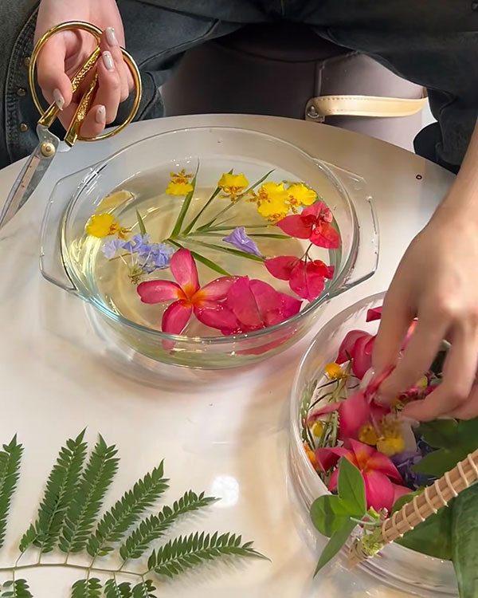
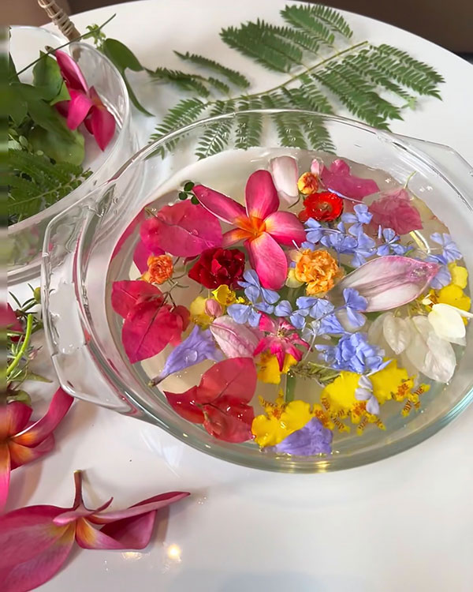
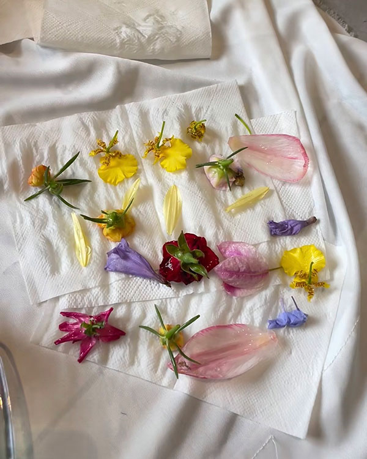
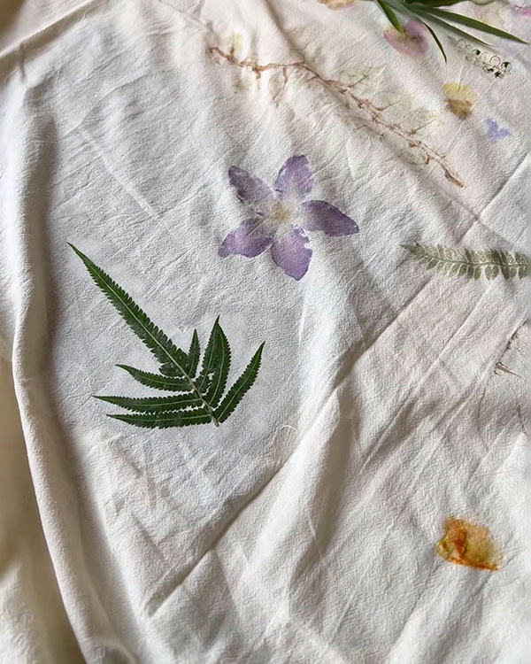
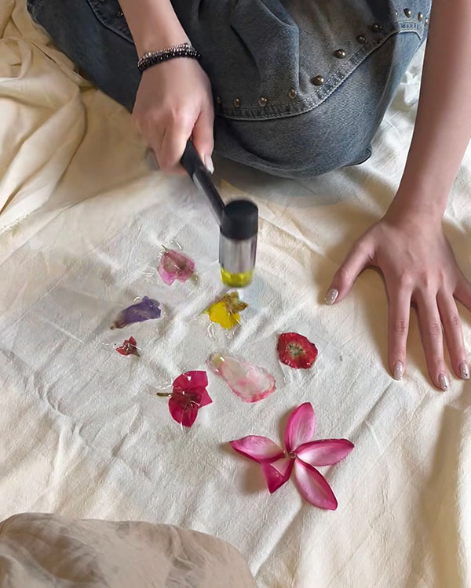
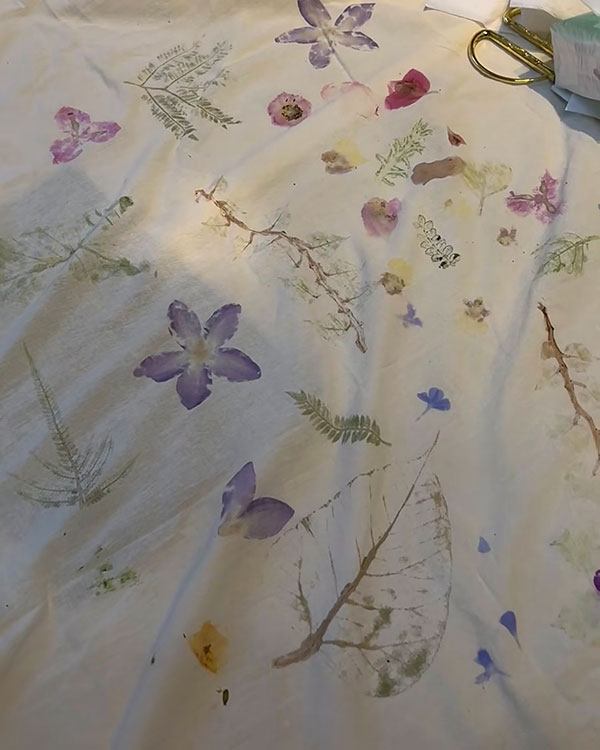

🍀STEP 1: Forage your plants
Collect a variety of fresh flowers and leaves from the nature.
*Choose plants with visible pigments for better color transfer.
🍀STEP 2: Prepare the soaking solution
Fill a container with water and add a small amount of alum powder or salt.
Stir to dissolve.

🍀STEP 3: Soak the botanicals
Submerge the flowers and leaves in the solution and let them soak for 20–30 minutes.

🍀STEP 4: Dry the plants
Remove the soaked botanicals and gently blot off excess moisture using tissue.

🍀STEP 5: Arrange & secure
Place the flowers and leaves onto the fabric.
Use tape to secure them in place, paying special attention to fixing the flower heads so they don’t shift.

🍀STEP 6: Hammer print
Gently tap the plants with a hammer to release their natural pigments.
*Cotton fabric absorbs color easily.
*Canvas tote bags require more hammering for the color to transfer fully.


✨You’ll get organic, one-of-a-kind botanical prints
with soft, natural textures-
— each piece unique 🌸🌿